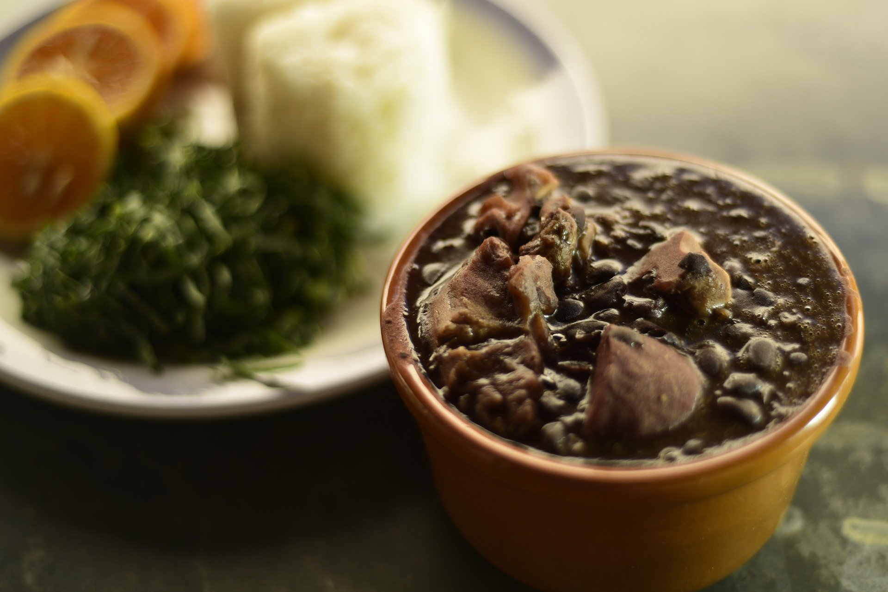

1 pacote médio de massa para lasanha (direto ao forno, sem cozimento prévio)
1 pote de requeijão cremoso
2 caldos de galinha (ou tempero completo sabor galinha)
2 copos de leite
1 caixa de creme de leite
2 colheres de farinha
3 colheres de manteiga
1 cebola média
Modo de Preparo:
Molho
Em uma panela, faça um creme homogêneo com as 2 colheres de farinha e 2 colheres de manteiga (reserve 1 colher de manteiga).
Acrescente o leite, 1 caldo de galinha e mexa constantemente.
Retire do fogo e acrescente o creme de leite, reserve.
Frango
Cozinhe o peito de frango em água (sem óleo), após cozido, desfie-o.
Pique a cebola em pedaços pequenos, coloque em uma panela e doure com a manteiga.
Acrescente o frango e o caldo de galinha, mexa sempre até o frango ficar totalmente dourado.
Montagem
Em um refratário, coloque 2 conchas de molho.
Faça a base com massa de lasanha, cubra com 1 camada de presunto, 1 de queijo e 1 de frango (nessa ordem).
Sobre o frango, coloque 1 camada de requeijão e 2 conchas de molho.
Cubra o requeijão com 1 camada de presunto, 1 camada de queijo e 1 camada de massa, coloque molho.
Repita esse processo até faltar cerca de 2,5 cm para chegar na borda do refratário.
Para finalizar, cubra a lasanha com muito queijo, requeijão e molho.
Asse por, aproximadamente, 20 minutos em fogo baixo.
Feijoada

Ingredientes:
1 Kg de feijão preto
100 g de carne seca
70 g de orelha de porco
70 g de rabo de porco
70 g de pé de porco
100 g de costelinha de porco
50 g de lombo de porco
100 g de paio
150 g de lingüiça portuguesa
Tempero:
2 cebolas grandes picadinhas
1 maço de cebolinha verde picadinha
3 folhas de louro
6 dentes de alho
Pimenta do reino a gosto
1 ou 2 laranjas
40 ml de de pinga
Sal se precisar
Modo de Preparo:
Coloque as carnes de molho por 36 horas ou mais, vá trocando a água várias vezes, se for ambiente quente ou verão, coloque gelo por cima ou em camadas frias.
Coloque para cozinhar passo a passo: as carnes duras, em seguida as carnes moles.
Quando estiver mole coloque o feijão, e retire as carnes.